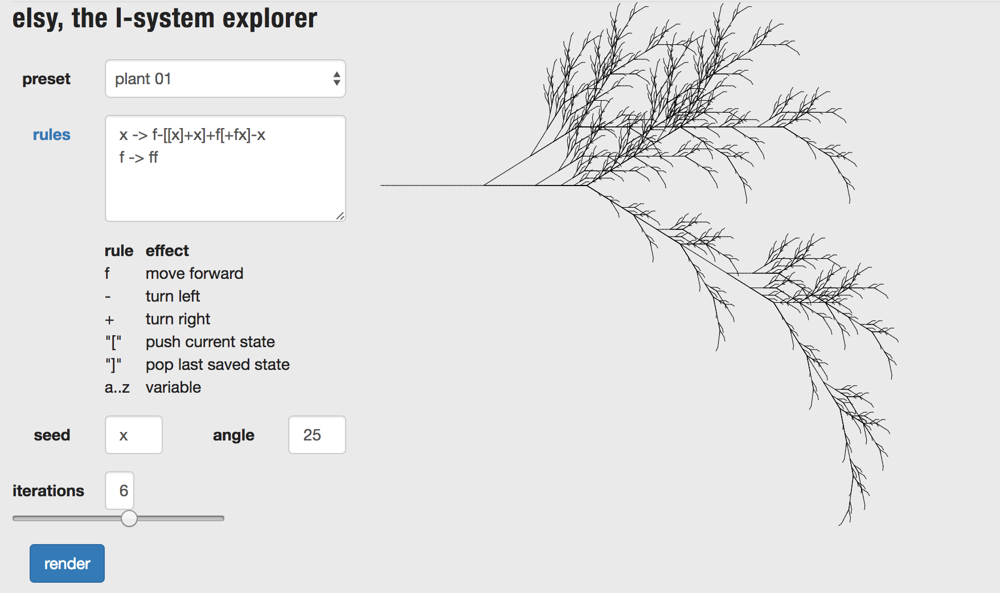
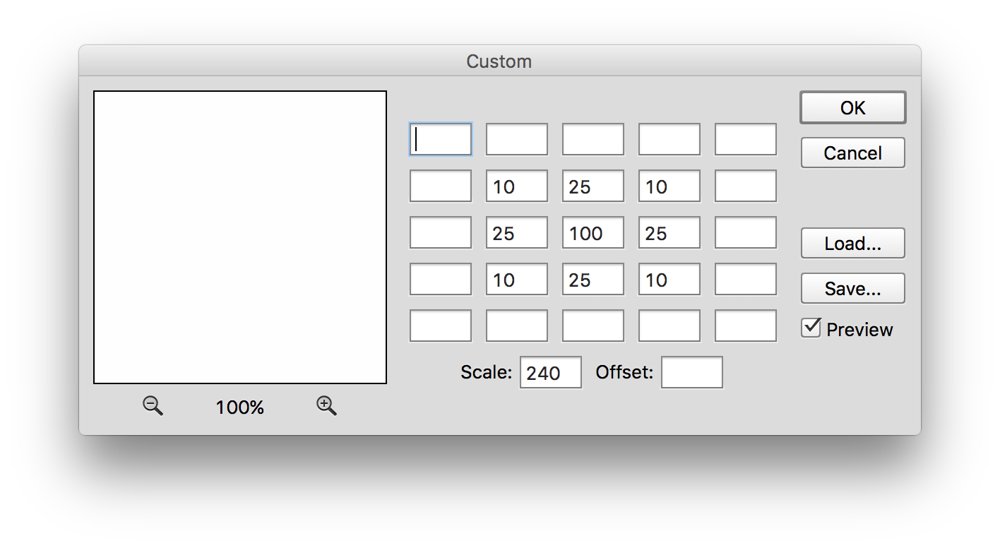

Parameter Examples
Parameters are factors of a system that are exposed. Exposing parameters allows artists and designers to create systems that can be controlled by others.
Zaha Hadid - Heydar Aliyev Center
.jpg?1384455904) archdaily.com: Zaha Hadid Architects,
Zaha Hadid,
Wikipedia: Parametricism
archdaily.com: Zaha Hadid Architects,
Zaha Hadid,
Wikipedia: Parametricism
Kuva.io - Hair

Makehuman

Droftarts - Parametric Pulley
Thigiverse: Parameteric Pulley
metaflop - modulator

Greg Schomburg - Gregfont

plastaq - elsy
 plastaq: elsy
Adobe Photoshop - Custom Filter
